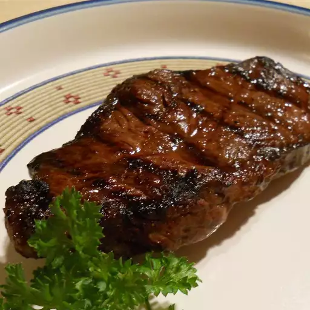

Steak Marinade

Description
This steak marinade infuses the meat with rich flavor, tenderizing it and enhancing its natural taste. The blend of soy sauce, Worcestershire sauce, garlic, and fresh herbs creates a savory and slightly tangy profile perfect for grilling or pan-searing. Marinate your steak for at least 30 minutes for a deliciously juicy result.
Ingredients
- Soy sauce: Provides a salty, umami base for the marinade.
- Worcestershire sauce: Adds a depth of flavor with a hint of tanginess.
- Olive oil: Helps the marinade adhere to the steak and adds a smooth texture.
- Garlic: Fresh garlic cloves, minced, give a robust aroma and flavor.
- Fresh herbs: Rosemary and thyme work well for a classic steak flavor.
- Black pepper: Freshly ground black pepper adds a slight kick.
- Optional: A splash of lemon juice or vinegar for added tanginess.
Steps
- In a small mixing bowl, combine soy sauce, Worcestershire sauce, olive oil, minced garlic, herbs, and black pepper.
- Whisk the ingredients together until well blended.
- Place the steak in a resealable plastic bag or a shallow dish.
- Pour the marinade over the steak, making sure it is evenly coated.
- Seal the bag or cover the dish and refrigerate for at least 30 minutes (or up to 8 hours for a deeper flavor).
- Remove the steak from the marinade and let it sit at room temperature for 15 minutes before cooking.
- Grill or cook the steak to your desired doneness, then let it rest for a few minutes before serving.